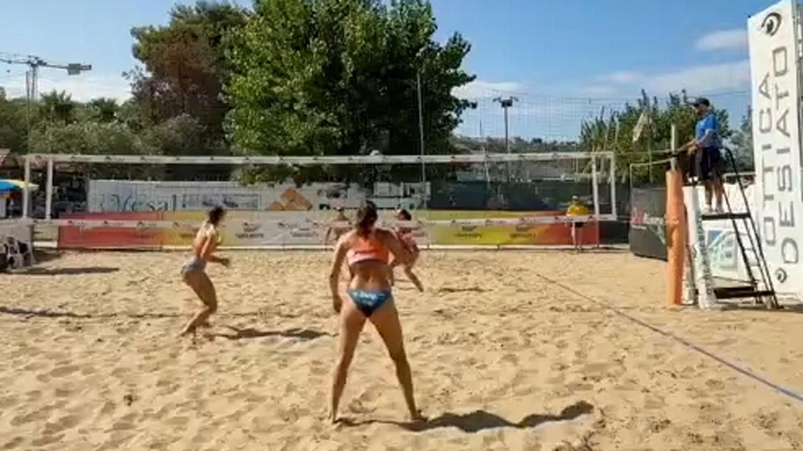

<!DOCTYPE html>
<html lang="it">
<head>
  <meta charset="UTF-8">
  <meta name="viewport" content="width=device-width, initial-scale=1.0">
  <title>Atto 2 — Dal laboratorio al campo</title>
  <link rel="preconnect" href="https://fonts.googleapis.com">
  <link rel="preconnect" href="https://fonts.gstatic.com" crossorigin>
  <link href="https://fonts.googleapis.com/css2?family=Montserrat:wght@600;700;800;900&family=Inter:wght@400;500;600;700&display=swap" rel="stylesheet">
  <script src="https://unpkg.com/react@18.3.1/umd/react.production.min.js"></script>
  <script src="https://unpkg.com/react-dom@18.3.1/umd/react-dom.production.min.js"></script>
  <script src="https://unpkg.com/@babel/standalone@7.26.10/babel.min.js"></script>
  <script>Babel.registerPreset('classic', { presets: [[Babel.availablePresets.react, { runtime: 'classic' }]] });</script>
  <style>
    :root {
      --bg: #0e1728;
      --bg-card: #16233c;
      --bg-light: #1E2E52;
      --border: #2a3a5c;
      --text: #f3f5f9;
      --text-dim: #c9d2e0;
      --text-muted: #93a0b6;
      --coral: #EF5540;
      --sun: #F6A93B;
      --teal: #1FA9A0;
      --sand: #E7C58C;
      --navy: #1E2E52;
      --success: #1FA9A0;
      --danger: #EF5540;
      --warn: #F6A93B;
      --info: #4e93b8;
      --purple: #a879c4;
      --fs-xs: clamp(13px, 0.7vw + 11px, 14px);
      --fs-sm: clamp(15px, 0.8vw + 12px, 16px);
      --fs-body: clamp(17px, 1vw + 13px, 19px);
      --fs-lead: clamp(19px, 1.3vw + 14px, 22px);
      --fs-h3: clamp(20px, 1.6vw + 14px, 26px);
      --fs-h2: clamp(26px, 2.4vw + 16px, 36px);
      --fs-h1: clamp(34px, 5vw + 18px, 58px);
      --fs-display: clamp(44px, 7vw + 20px, 84px);
      --lh-body: 1.65;
      --lh-heading: 1.18;
    }
    * { margin: 0; padding: 0; box-sizing: border-box; }
    body { background: var(--bg); color: var(--text); font-family: 'Inter', sans-serif; }
    #root { min-height: 100vh; position: relative; }
    a { color: inherit; }
    h1 { font-family: 'Montserrat', sans-serif; line-height: var(--lh-heading); }
    h2, h3 { font-family: 'Montserrat', sans-serif; line-height: var(--lh-heading); font-weight: 700; }
    h2 { font-size: var(--fs-h2); }
    h3 { font-size: var(--fs-h3); }
    p, li { line-height: var(--lh-body); }
    button { font-family: 'Inter', sans-serif; }
    .bg-texture {
      position: fixed; inset: 0; pointer-events: none; z-index: 0;
      opacity: 0.05;
      background-image: url("data:image/svg+xml,%3Csvg xmlns='http://www.w3.org/2000/svg' width='120' height='120'%3E%3Cfilter id='n'%3E%3CfeTurbulence type='fractalNoise' baseFrequency='0.9' numOctaves='2' stitchTiles='stitch'/%3E%3C/filter%3E%3Crect width='100%25' height='100%25' filter='url(%23n)'/%3E%3C/svg%3E");
    }
    .draw-surface { touch-action: none; }
    /* Guscio dell'app: colonna flex a tutta altezza, uguale in ogni atto (vedi CLAUDE.md):
       top-bar e bottom-bar sono voci di flusso normale (mai position: fixed), l'area
       slide in mezzo scorre da sola. Così nessun contenuto finisce mai sotto le barre. */
    .app-shell { height: 100vh; height: 100dvh; display: flex; flex-direction: column; overflow: hidden; }
    .slide-scroll { -webkit-overflow-scrolling: touch; padding-bottom: 24px; }
    input[type=range] {
      -webkit-appearance: none; appearance: none;
      width: 100%; height: 36px; background: transparent; cursor: pointer; touch-action: none;
    }
    input[type=range]::-webkit-slider-runnable-track { height: 8px; border-radius: 4px; background: var(--border); }
    input[type=range]::-moz-range-track { height: 8px; border-radius: 4px; background: var(--border); }
    input[type=range]::-webkit-slider-thumb {
      -webkit-appearance: none; appearance: none; width: 28px; height: 28px; border-radius: 50%;
      background: var(--thumb, #ffffff); border: 3px solid #0e1728; margin-top: -10px; cursor: pointer;
    }
    input[type=range]::-moz-range-thumb {
      width: 28px; height: 28px; border-radius: 50%; background: var(--thumb, #ffffff);
      border: 3px solid #0e1728; cursor: pointer;
    }
    input[type=range]:disabled { opacity: 1; cursor: not-allowed; }
    @media (max-width: 768px) {
      .slide-content { padding: 16px !important; }
      .top-bar { padding: 0 10px !important; }
      .top-bar span { font-size: var(--fs-xs) !important; }
      .top-bar > div:first-child { gap: 8px !important; }
      .bottom-bar { gap: 8px !important; padding: 0 10px !important; }
      .bottom-bar button, .bottom-bar a { padding: 10px 14px !important; font-size: var(--fs-xs) !important; min-height: 44px; }
      svg { max-width: 100%; height: auto; }
      .assembly-grid { grid-template-columns: 1fr !important; }
      .stations-row { justify-content: flex-start !important; }
      .spike-grid { grid-template-columns: repeat(2, 1fr) !important; }
      .speed-row { flex-wrap: wrap; }
    }
    @media (max-width: 480px) {
      .top-bar > div:first-child span:nth-child(4) { display: none; }
      .spike-grid { grid-template-columns: 1fr 1fr !important; }
    }
  </style>
</head>
<body>
  <div id="root"></div>
  <script type="text/babel" data-presets="classic">
    const { useState, useEffect, useRef, useCallback } = React;

    /* ============================================================
       CONTRASTO — utility numerica (KB UI-CONTRAST-ACCESSIBILITY.md)
       Sceglie automaticamente testo bianco o testo scuro (colors.bg)
       sopra un dato colore di sfondo, in base a quale dei due dà un
       rapporto di contrasto maggiore (WCAG relative luminance). Usata
       da SolidButton così ogni bottone pieno passa AA senza doverlo
       verificare "a occhio" colore per colore.
       ============================================================ */
    function relLuminance(hex) {
      const c = hex.replace('#', '');
      const r = parseInt(c.substring(0, 2), 16) / 255;
      const g = parseInt(c.substring(2, 4), 16) / 255;
      const b = parseInt(c.substring(4, 6), 16) / 255;
      const f = v => (v <= 0.03928 ? v / 12.92 : Math.pow((v + 0.055) / 1.055, 2.4));
      return 0.2126 * f(r) + 0.7152 * f(g) + 0.0722 * f(b);
    }
    function contrastRatio(l1, l2) {
      const a = Math.max(l1, l2), b = Math.min(l1, l2);
      return (a + 0.05) / (b + 0.05);
    }

    const colors = {
      bg: '#0e1728', bgCard: '#16233c', bgLight: '#1E2E52',
      // Il sole (#F6A93B) è già molto luminoso: scurirlo per usarci sopra testo bianco
      // (come fatto per il coral in Atto 1) darebbe comunque un contrasto peggiore che
      // lasciarlo intatto e usarci sopra testo SCURO. Verificato numericamente (vedi
      // bestTextColor più sotto): bianco su #F6A93B ≈ 2.0:1 (insufficiente), testo scuro
      // (#0e1728) su #F6A93B ≈ 9.1:1 (ottimo AA). Per questo accentSolid qui non è
      // scurito — vedi CLAUDE.md, sezione contrasto, opzione "testo scuro se ha più contrasto".
      accent: '#F6A93B', accentAlt: '#FBCB7C', accentSolid: '#F6A93B',
      text: '#f3f5f9', textDim: '#c9d2e0', textMuted: '#93a0b6',
      border: '#2a3a5c',
      coral: '#EF5540', sun: '#F6A93B', teal: '#1FA9A0', sand: '#E7C58C', navy: '#1E2E52',
      success: '#1FA9A0', danger: '#EF5540', warn: '#F6A93B', info: '#4e93b8', purple: '#a879c4'
    };

    function bestTextColor(bgHex) {
      const bgL = relLuminance(bgHex);
      const cWhite = contrastRatio(bgL, 1);
      const cDark = contrastRatio(bgL, relLuminance(colors.bg));
      return cWhite >= cDark ? '#ffffff' : colors.bg;
    }

    const ACT_LABEL = 'Atto 2';
    const ACT_TITLE = 'Dal laboratorio al campo';
    const PREV_ACT_HREF = 'atto1-il-punto-di-partenza.html';
    const NEXT_ACT_HREF = 'atto3-quando-sembrava-funzionare.html';

    // Flag globale: true mentre un simulatore cattura tastiera/puntatore, per impedire
    // alla navigazione slide (Spazio/Frecce) di interferire.
    let simActive = false;

    const Box = ({ type = 'info', title, children }) => {
      const cfg = {
        info: { c: colors.info, i: 'ℹ️' },
        warn: { c: colors.warn, i: '⚠️' },
        danger: { c: colors.danger, i: '🛑' },
        tip: { c: colors.purple, i: '💡' },
        success: { c: colors.success, i: '✓' }
      };
      const { c, i } = cfg[type];
      return (
        <div style={{ background: c + '15', border: `1px solid ${c}40`, borderLeft: `4px solid ${c}`, borderRadius: '0 4px 4px 0', padding: '16px 20px', margin: '16px 0' }}>
          {title && <div style={{ display: 'flex', alignItems: 'center', gap: '8px', marginBottom: '8px', fontWeight: '700', color: c, fontSize: 'var(--fs-body)', fontFamily: "'Montserrat', sans-serif" }}>{i} {title}</div>}
          <div style={{ color: colors.textDim, lineHeight: 'var(--lh-body)', fontSize: 'var(--fs-body)' }}>{children}</div>
        </div>
      );
    };

    const Glow = ({ children, color = colors.accent }) => (
      <div style={{ position: 'relative', padding: '2px', borderRadius: '12px', background: `linear-gradient(135deg, ${color}40, transparent, ${color}20)` }}>
        <div style={{ background: colors.bgCard, borderRadius: '10px', padding: '20px' }}>{children}</div>
      </div>
    );

    const SolidButton = ({ onClick, disabled, children, bg = colors.accentSolid, style }) => {
      const textColor = bestTextColor(bg);
      return (
        <button
          onClick={onClick}
          disabled={disabled}
          style={{
            padding: '12px 26px', minHeight: '48px', border: 'none', borderRadius: '6px',
            background: disabled ? colors.bgLight : bg,
            color: disabled ? colors.textMuted : textColor,
            fontWeight: '700', fontSize: 'var(--fs-sm)', cursor: disabled ? 'not-allowed' : 'pointer',
            fontFamily: "'Montserrat', sans-serif", letterSpacing: '0.02em',
            transition: 'transform 0.15s, filter 0.15s',
            ...style
          }}
          onMouseEnter={e => { if (!disabled) e.currentTarget.style.transform = 'translateY(-2px)'; }}
          onMouseLeave={e => { e.currentTarget.style.transform = 'translateY(0)'; }}
        >{children}</button>
      );
    };

    const GhostButton = ({ onClick, disabled, active, children }) => (
      <button
        onClick={onClick}
        disabled={disabled}
        style={{
          padding: '10px 18px', minHeight: '44px', borderRadius: '6px',
          border: `1px solid ${active ? colors.accent : colors.border}`,
          background: active ? colors.accent + '25' : colors.bgLight,
          color: disabled ? colors.textMuted : (active ? colors.accent : colors.textDim),
          fontWeight: '600', fontSize: 'var(--fs-sm)', cursor: disabled ? 'not-allowed' : 'pointer'
        }}
      >{children}</button>
    );

    /* ============================================================
       DATI DAI FOTOGRAMMI REALI (da assets/frames/manifest.json, voce "BUMP")
       Rimappatura frame intero -> ritaglio zoom, stessa formula usata in Atto 1:
       locale = (assoluto - zoom_window_origine) / zoom_window_dimensione
       zoom_window BUMP: [0.3094, 0.4069, 0.3844, 0.3833]
       ============================================================ */
    const BUMP_GESTURE_BOX = { x: 0.4556, y: 0.3905, w: 0.0910, h: 0.2231 };
    const BUMP_BALL_BOX = { x: 0.4599, y: 0.4010, w: 0.0216, h: 0.0389 };
    const BUMP_PLAYER_BOXES = [
      { x: 0.4084, y: 0.4481, w: 0.1233, h: 0.4951 },
      { x: 0.2248, y: 0.4518, w: 0.0679, h: 0.3018 },
      { x: 0.3975, y: 0.4481, w: 0.0447, h: 0.1787 }
    ];
    // Rettangolo "spurio", illustrativo (non dal manifest): rappresenta una falsa
    // rilevazione ai margini dell'inquadratura, rimossa nella stazione "Pulizia".
    const STRAY_BOX = { x: 0.02, y: 0.03, w: 0.09, h: 0.10 };

    /* ============================================================
       SIMULATORE 1 — "La catena di montaggio"
       ============================================================ */
    const STATIONS = [
      { key: 'rilevamento', label: 'Rilevamento', icon: '🔎' },
      { key: 'campo', label: 'Campo', icon: '📐' },
      { key: 'pulizia', label: 'Pulizia', icon: '🧹' },
      { key: 'scambi', label: 'Scambi', icon: '⛓️' },
      { key: 'punteggio', label: 'Punteggio', icon: '🔢' }
    ];

    function DetectionBox({ box, color, dashed, label }) {
      return (
        <div style={{
          position: 'absolute', left: `${box.x * 100}%`, top: `${box.y * 100}%`,
          width: `${box.w * 100}%`, height: `${box.h * 100}%`,
          border: `2px ${dashed ? 'dashed' : 'solid'} ${color}`, pointerEvents: 'none',
          boxSizing: 'border-box'
        }}>
          {label && <span style={{ position: 'absolute', top: '-20px', left: '-2px', fontSize: '11px', fontWeight: '700', color, background: colors.bg + 'cc', padding: '1px 4px', borderRadius: '3px', whiteSpace: 'nowrap' }}>{label}</span>}
        </div>
      );
    }

    function FrameCard({ step }) {
      const rows = [
        { min: 0, label: 'Giocatori', value: '3 rilevati' },
        { min: 0, label: 'Palla', value: '1 rilevata' },
        { min: 0, label: 'Gesto', value: 'Bagher (da verificare)' },
        { min: 1, label: 'Campo', value: 'linee trovate → vista dall\'alto disponibile' },
        { min: 2, label: 'Pulizia', value: '1 rettangolo spurio rimosso' },
        { min: 3, label: 'Scambio', value: 'agganciato allo scambio #12 — tocco 3 di 5' },
        { min: 4, label: 'Punteggio', value: '8 – 6 (aggiornato)' }
      ];
      return (
        <div style={{ background: colors.bgCard, border: `1px solid ${colors.border}`, borderRadius: '8px', padding: '18px', minHeight: '220px' }}>
          <div style={{ fontFamily: "'Montserrat', sans-serif", fontWeight: '700', color: colors.accent, marginBottom: '10px', fontSize: 'var(--fs-sm)', textTransform: 'uppercase', letterSpacing: '0.04em' }}>
            Scheda del fotogramma
          </div>
          {rows.filter(r => step >= r.min).map((r, i) => (
            <div key={i} style={{ display: 'flex', justifyContent: 'space-between', gap: '10px', padding: '7px 0', borderBottom: i < rows.filter(x => step >= x.min).length - 1 ? `1px solid ${colors.border}` : 'none', fontSize: 'var(--fs-sm)' }}>
              <span style={{ color: colors.textMuted }}>{r.label}</span>
              <span style={{ color: colors.text, fontWeight: '600', textAlign: 'right' }}>{r.value}</span>
            </div>
          ))}
        </div>
      );
    }

    function AssemblyLineSimulator() {
      const [step, setStep] = useState(0);
      const showCourt = step >= 1;
      const cleaned = step >= 2;
      const showRally = step >= 3;
      const showScore = step >= 4;

      return (
        <div>
          <div className="stations-row" style={{ display: 'flex', gap: '8px', flexWrap: 'wrap', marginBottom: '18px' }}>
            {STATIONS.map((s, i) => (
              <button key={s.key} onClick={() => setStep(i)} style={{
                minHeight: '44px', padding: '8px 14px', borderRadius: '20px', cursor: 'pointer',
                border: `1px solid ${i === step ? colors.accent : colors.border}`,
                background: i === step ? colors.accent + '25' : colors.bgCard,
                color: i === step ? colors.accent : colors.textDim,
                fontWeight: '700', fontSize: 'var(--fs-xs)', whiteSpace: 'nowrap'
              }}>{i + 1}. {s.icon} {s.label}</button>
            ))}
          </div>

          <div className="assembly-grid" style={{ display: 'grid', gridTemplateColumns: '1.2fr 1fr', gap: '20px', alignItems: 'start' }}>
            <div style={{ textAlign: 'center' }}>
              <div style={{ position: 'relative', display: 'inline-block', lineHeight: 0, maxWidth: '100%', borderRadius: '8px', overflow: 'hidden', border: `1px solid ${colors.border}` }}>
                
                {/* Rilevamento: box da manifest.json (sempre visibili da qui in poi) */}
                <DetectionBox box={BUMP_GESTURE_BOX} color={colors.sun} label="gesto" />
                <DetectionBox box={BUMP_BALL_BOX} color={colors.teal} label="palla" />
                {BUMP_PLAYER_BOXES.map((b, i) => <DetectionBox key={i} box={b} color={colors.info} />)}
                {!cleaned && <DetectionBox box={STRAY_BOX} color={colors.danger} dashed label="spurio?" />}
                {showCourt && (
                  <svg viewBox="0 0 100 100" preserveAspectRatio="none" style={{ position: 'absolute', inset: 0, width: '100%', height: '100%', pointerEvents: 'none' }}>
                    <polygon points="30,98 70,98 58,55 42,55" fill="none" stroke="#ffffff" strokeWidth="1.4" />
                    <line x1="50" y1="98" x2="50" y2="55" stroke="#ffffff" strokeWidth="0.9" opacity="0.85" strokeDasharray="2 1.5" />
                  </svg>
                )}
              </div>
              <p style={{ color: colors.textMuted, fontSize: 'var(--fs-xs)', marginTop: '8px' }}>Fotogramma reale della demo — stazione attiva: <strong style={{ color: colors.accent }}>{STATIONS[step].label}</strong></p>
            </div>

            <div>
              <FrameCard step={step} />
              {showRally && (
                <div style={{ marginTop: '12px', display: 'flex', gap: '3px', alignItems: 'center' }}>
                  {Array.from({ length: 9 }).map((_, i) => (
                    <div key={i} style={{ flex: 1, height: '18px', borderRadius: '3px', background: i === 3 ? colors.accent : colors.bgLight, border: i === 3 ? `2px solid ${colors.accentAlt}` : 'none' }} />
                  ))}
                </div>
              )}
              {showRally && <p style={{ color: colors.textMuted, fontSize: 'var(--fs-xs)', marginTop: '6px' }}>Il fotogramma entra nel blocco evidenziato: fa parte dello scambio #12.</p>}
              {showScore && (
                <div style={{ marginTop: '14px', textAlign: 'center', fontFamily: "'Montserrat', sans-serif", fontWeight: '800', fontSize: 'var(--fs-h2)', color: colors.accent }}>
                  8 – 6
                </div>
              )}
            </div>
          </div>

          <Box type="tip" title="Il contratto dei dati">
            Ogni stazione legge e arricchisce la <strong style={{ color: colors.text }}>stessa scheda</strong>: parlare la stessa lingua permette a persone e moduli diversi di lavorare insieme.
          </Box>
        </div>
      );
    }

    /* ============================================================
       ILLUSTRAZIONE — "Il contratto dei dati" (scheda compilata a mano)
       ============================================================ */
    function DataContractCard() {
      const fields = [
        { k: 'Istante', v: 'fotogramma 2508' },
        { k: 'Giocatori', v: '4 posizioni sul campo' },
        { k: 'Palla', v: 'posizione + confidenza' },
        { k: 'Gesti', v: 'schiacciata (giocatore 3)' },
        { k: 'Punteggio', v: '8 – 6' }
      ];
      return (
        <div style={{ background: colors.bgCard, border: `1px solid ${colors.border}`, borderRadius: '10px', padding: '22px', maxWidth: '460px', margin: '0 auto' }}>
          <div style={{ fontFamily: "'Montserrat', sans-serif", fontWeight: '700', color: colors.accent, marginBottom: '14px', textAlign: 'center' }}>Scheda del fotogramma — esempio</div>
          {fields.map((f, i) => (
            <div key={i} style={{ display: 'flex', justifyContent: 'space-between', padding: '9px 0', borderBottom: i < fields.length - 1 ? `1px dashed ${colors.border}` : 'none' }}>
              <span style={{ color: colors.textMuted, fontSize: 'var(--fs-sm)' }}>{f.k}</span>
              <span style={{ color: colors.text, fontWeight: '600', fontSize: 'var(--fs-sm)' }}>{f.v}</span>
            </div>
          ))}
        </div>
      );
    }

    /* ============================================================
       SIMULATORE 2 — Il bug dell'OR ("scarta se... E/OPPURE...")
       ============================================================ */
    const SPIKES = [
      { id: 1, near: true, uncertain: false },
      { id: 2, near: true, uncertain: true },
      { id: 3, near: false, uncertain: false },
      { id: 4, near: false, uncertain: true },
      { id: 5, near: true, uncertain: false },
      { id: 6, near: false, uncertain: false },
      { id: 7, near: true, uncertain: true },
      { id: 8, near: false, uncertain: true }
    ];
    function isDiscarded(s, mode) {
      const far = !s.near;
      return mode === 'AND' ? (far && s.uncertain) : (far || s.uncertain);
    }

    function SpikeDiscardGame() {
      const [mode, setMode] = useState('AND');
      const results = SPIKES.map(s => ({ ...s, out: isDiscarded(s, mode) }));
      const survived = results.filter(r => !r.out).length;

      return (
        <div>
          <div style={{ display: 'flex', gap: '10px', flexWrap: 'wrap', marginBottom: '18px' }}>
            <GhostButton active={mode === 'AND'} onClick={() => setMode('AND')}>Scarta se lontana <strong>E</strong> incerta (corretta)</GhostButton>
            <GhostButton active={mode === 'OR'} onClick={() => setMode('OR')}>Scarta se lontana <strong>OPPURE</strong> incerta (col bug)</GhostButton>
          </div>

          <div className="spike-grid" style={{ display: 'grid', gridTemplateColumns: 'repeat(4, 1fr)', gap: '10px', marginBottom: '18px' }}>
            {results.map(r => (
              <div key={r.id} style={{
                background: r.out ? colors.danger + '15' : colors.success + '15',
                border: `2px solid ${r.out ? colors.danger : colors.success}`,
                borderRadius: '8px', padding: '10px 8px', textAlign: 'center'
              }}>
                <div style={{ fontSize: '22px', marginBottom: '4px' }}>🏐</div>
                <div style={{ fontSize: 'var(--fs-xs)', color: colors.textDim }}>{r.near ? 'palla vicina' : 'palla lontana'}</div>
                <div style={{ fontSize: 'var(--fs-xs)', color: colors.textDim, marginBottom: '6px' }}>{r.uncertain ? 'gesto incerto' : 'gesto sicuro'}</div>
                <div style={{ fontWeight: '700', fontSize: 'var(--fs-xs)', color: r.out ? colors.danger : colors.success }}>{r.out ? 'SCARTATA' : 'conservata'}</div>
              </div>
            ))}
          </div>

          <Box type={mode === 'OR' && survived <= 2 ? 'danger' : 'success'} title="Schiacciate sopravvissute">
            <div style={{ fontSize: 'var(--fs-h2)', fontWeight: '800', fontFamily: "'Montserrat', sans-serif", color: mode === 'OR' ? colors.danger : colors.success, marginBottom: '6px' }}>
              {survived} di {SPIKES.length}
            </div>
            {mode === 'OR'
              ? <p>Con "oppure" basta una sola condizione vera per scartare: quasi tutte le schiacciate spariscono. Un solo operatore logico può svuotare un'intera classe di dati.</p>
              : <p>Con "e" servono entrambe le condizioni insieme: la regola scarta solo i casi davvero dubbi.</p>}
          </Box>
        </div>
      );
    }

    /* ============================================================
       ILLUSTRAZIONE — Dal computer alla palestra (mockup app)
       ============================================================ */
    function AppMockup() {
      return (
        <svg viewBox="0 0 360 260" style={{ width: '100%', maxWidth: '420px', display: 'block', margin: '0 auto', maxHeight: '38dvh' }}>
          <rect x="20" y="10" width="320" height="240" rx="18" fill={colors.bgCard} stroke={colors.border} strokeWidth="2" />
          <rect x="36" y="28" width="288" height="140" rx="6" fill={colors.bg} />
          {/* "video" con box */}
          <rect x="150" y="70" width="46" height="70" fill="none" stroke={colors.sun} strokeWidth="1.5" />
          <text x="150" y="66" fontSize="9" fill={colors.sun} fontFamily="Montserrat, sans-serif">schiacciata</text>
          <circle cx="230" cy="110" r="5" fill={colors.sand} />
          <rect x="90" y="90" width="30" height="55" fill="none" stroke={colors.info} strokeWidth="1.5" />
          {/* filtri */}
          <rect x="36" y="176" width="60" height="20" rx="10" fill={colors.accent} opacity="0.25" />
          <text x="46" y="189" fontSize="9" fill={colors.accent} fontFamily="Inter, sans-serif" fontWeight="700">filtri</text>
          <rect x="102" y="176" width="90" height="20" rx="10" fill={colors.bgLight} />
          <text x="112" y="189" fontSize="9" fill={colors.textDim} fontFamily="Inter, sans-serif">vista dall'alto</text>
          {/* timeline */}
          {Array.from({ length: 14 }).map((_, i) => (
            <rect key={i} x={36 + i * 21} y="212" width="18" height="14" rx="3"
              fill={[3, 7, 10].includes(i) ? colors.teal : colors.bgLight} />
          ))}
        </svg>
      );
    }

    /* ============================================================
       SLIDES
       ============================================================ */
    const slides = [
      // 1 - Titolo
      () => (
        <div style={{ textAlign: 'center', padding: '60px 30px', display: 'flex', flexDirection: 'column', alignItems: 'center', justifyContent: 'center', minHeight: '70vh' }}>
          <div style={{ fontSize: 'var(--fs-display)', marginBottom: '20px' }}>🧪</div>
          <div style={{ fontSize: 'var(--fs-xs)', color: colors.accent, textTransform: 'uppercase', letterSpacing: '3px', marginBottom: '16px', fontWeight: '700' }}>{ACT_LABEL}</div>
          <h1 style={{ fontSize: 'var(--fs-h1)', fontWeight: '700', background: `linear-gradient(135deg, ${colors.accent}, ${colors.accentAlt})`, WebkitBackgroundClip: 'text', WebkitTextFillColor: 'transparent', marginBottom: '16px' }}>{ACT_TITLE}</h1>
          <p style={{ fontSize: 'var(--fs-lead)', color: colors.textDim, maxWidth: '620px', lineHeight: 'var(--lh-body)' }}>
            Un prototipo di ricerca dimostra un'idea. Un prodotto deve funzionare ogni giorno. Ecco come abbiamo provato a farlo diventare tale — fino al primo errore, istruttivo, che avrebbe complicato tutto.
          </p>
        </div>
      ),

      // 2 - Mettere ordine
      () => (
        <div style={{ padding: '30px' }}>
          <h2 style={{ color: colors.accent, marginBottom: '24px', display: 'flex', alignItems: 'center', gap: '12px' }}>
            <span style={{ fontSize: '28px' }}>🏭</span> Mettere ordine
          </h2>
          <Glow color={colors.accent}>
            <p style={{ color: colors.textDim, fontSize: 'var(--fs-body)' }}>
              Il codice di ricerca serve a <strong style={{ color: colors.text }}>dimostrare un'idea</strong>; un prodotto deve funzionare ogni giorno, su ogni video.
            </p>
          </Glow>
          <Box type="info" title="Primo passo">
            Dividere il lavoro in <strong style={{ color: colors.text }}>stadi</strong>, come una catena di montaggio: rilevamento, campo, pulizia, scambi, punteggio. Ogni stadio riceve una scheda e la restituisce più ricca.
          </Box>
          <p style={{ color: colors.textMuted, fontSize: 'var(--fs-sm)', marginTop: '10px' }}>
            Nella prossima slide segui un fotogramma reale attraverso le 5 stazioni.
          </p>
        </div>
      ),

      // 3 - Simulatore "La catena di montaggio"
      () => (
        <div style={{ padding: '30px' }}>
          <h2 style={{ color: colors.accent, marginBottom: '20px', display: 'flex', alignItems: 'center', gap: '12px' }}>
            <span style={{ fontSize: '28px' }}>⚙️</span> Simulatore — La catena di montaggio
          </h2>
          <p style={{ color: colors.textMuted, fontSize: 'var(--fs-sm)', marginBottom: '14px' }}>Clicca le stazioni in ordine: a ognuna la scheda del fotogramma si arricchisce.</p>
          <AssemblyLineSimulator />
        </div>
      ),

      // 4 - Il contratto dei dati
      () => (
        <div style={{ padding: '30px' }}>
          <h2 style={{ color: colors.accent, marginBottom: '20px', display: 'flex', alignItems: 'center', gap: '12px' }}>
            <span style={{ fontSize: '28px' }}>📋</span> Il contratto dei dati
          </h2>
          <p style={{ color: colors.textDim, fontSize: 'var(--fs-body)', marginBottom: '20px' }}>
            Tutti gli stadi si passano la stessa "scheda": <strong style={{ color: colors.text }}>in questo istante ci sono questi giocatori, questa palla, questi gesti, questo punteggio.</strong> Parlare la stessa lingua permette a persone e moduli diversi di lavorare insieme.
          </p>
          <DataContractCard />
        </div>
      ),

      // 5 - Il bug dell'OR
      () => (
        <div style={{ padding: '30px' }}>
          <h2 style={{ color: colors.accent, marginBottom: '16px', display: 'flex', alignItems: 'center', gap: '12px' }}>
            <span style={{ fontSize: '28px' }}>🐛</span> Il bug dell'OR
          </h2>
          <p style={{ color: colors.textDim, fontSize: 'var(--fs-body)', marginBottom: '16px' }}>
            Durante la migrazione è emerso un errore nascosto: una condizione di scarto scritta con "oppure" invece che con "e" cancellava quasi tutte le schiacciate.
          </p>
          <SpikeDiscardGame />
        </div>
      ),

      // 6 - Dal computer alla palestra
      () => (
        <div style={{ padding: '30px' }}>
          <h2 style={{ color: colors.accent, marginBottom: '20px', display: 'flex', alignItems: 'center', gap: '12px' }}>
            <span style={{ fontSize: '28px' }}>💻</span> Dal computer alla palestra
          </h2>
          <p style={{ color: colors.textDim, fontSize: 'var(--fs-body)', marginBottom: '16px' }}>
            Su un normale computer l'analisi di una clip breve richiedeva molti minuti. Spostata su un server con scheda grafica (GPU), diventa questione di secondi.
          </p>
          <AppMockup />
          <Box type="tip" title="Nasce una web app">
            Carichi il video, aspetti, guardi il risultato con filtri, timeline e vista dall'alto.
          </Box>
        </div>
      ),

      // 7 - Il primo feedback vero
      () => (
        <div style={{ padding: '30px' }}>
          <h2 style={{ color: colors.accent, marginBottom: '20px', display: 'flex', alignItems: 'center', gap: '12px' }}>
            <span style={{ fontSize: '28px' }}>🙋</span> Il primo feedback vero
          </h2>
          <Glow color={colors.accent}>
            <p style={{ color: colors.textDim, fontSize: 'var(--fs-lead)', fontStyle: 'italic' }}>
              "Troppe battute. E qui segni un bagher, ma la palla non l'ha nemmeno toccata."
            </p>
          </Glow>
          <Box type="warn" title="Il punto cieco del laboratorio">
            In laboratorio questi errori non si vedevano, perché nessuno guardava le partite con l'occhio di chi allena davvero.
          </Box>
        </div>
      ),

      // 8 - Chiusura
      () => (
        <div style={{ padding: '30px', textAlign: 'center' }}>
          <h2 style={{ color: colors.accent, marginBottom: '20px' }}>Un sistema che funzionava da un capo all'altro</h2>
          <Glow color={colors.accent}>
            <p style={{ color: colors.textDim, fontSize: 'var(--fs-lead)' }}>
              Ora bisognava migliorarlo. E qui abbiamo commesso il primo, istruttivo errore.
            </p>
          </Glow>
          <Box type="tip" title="La lezione dell'atto">
            Prima si fa funzionare il tubo da un capo all'altro, poi si ottimizza. E un modello che nessuno usa non riceve feedback.
          </Box>
        </div>
      )
    ];

    /* ============================================================
       APP
       ============================================================ */
    function App() {
      const total = slides.length;
      const initialSlide = (() => {
        const n = parseInt(new URLSearchParams(window.location.search).get('slide'), 10);
        return n >= 1 && n <= total ? n - 1 : 0;
      })();
      const [current, setCurrent] = useState(initialSlide);

      const next = useCallback(() => setCurrent(c => Math.min(c + 1, total - 1)), [total]);
      const prev = useCallback(() => setCurrent(c => Math.max(c - 1, 0)), []);

      useEffect(() => { document.title = `${ACT_LABEL} — ${ACT_TITLE}`; }, []);

      useEffect(() => {
        const handler = e => {
          if (simActive) return; // un simulatore sta usando la tastiera
          const evTarget = e.target;
          const evTag = evTarget && evTarget.tagName ? evTarget.tagName.toLowerCase() : '';
          const isFormField = evTag === 'input' || evTag === 'textarea' || evTag === 'select' || evTag === 'button'
            || (evTarget && evTarget.isContentEditable) || (evTarget && evTarget.getAttribute && evTarget.getAttribute('role') === 'slider');
          // Lascia campi, slider e bottoni utilizzabili da tastiera (Spazio attiva il bottone,
          // le frecce muovono lo slider); ESC torna sempre all'indice tranne quando un simulatore
          // sta davvero catturando la tastiera (simActive, controllato sopra).
          if (isFormField && e.key !== 'Escape') return;
          if (e.key === 'ArrowRight' || e.key === ' ') { e.preventDefault(); next(); }
          if (e.key === 'ArrowLeft') { e.preventDefault(); prev(); }
          if (e.key === 'Escape') window.location.href = 'index.html';
          if (e.key >= '1' && e.key <= '9') { const idx = parseInt(e.key) - 1; if (idx < total) setCurrent(idx); }
        };
        window.addEventListener('keydown', handler);
        return () => window.removeEventListener('keydown', handler);
      }, [next, prev, total]);

      const touchRef = useRef(null);
      useEffect(() => {
        const onStart = e => { touchRef.current = e.touches[0].clientX; };
        const onEnd = e => {
          if (touchRef.current == null || simActive) return;
          const dx = e.changedTouches[0].clientX - touchRef.current;
          if (Math.abs(dx) > 60) { dx < 0 ? next() : prev(); }
          touchRef.current = null;
        };
        window.addEventListener('touchstart', onStart, { passive: true });
        window.addEventListener('touchend', onEnd, { passive: true });
        return () => { window.removeEventListener('touchstart', onStart); window.removeEventListener('touchend', onEnd); };
      }, [next, prev]);

      return (
        <div className="app-shell" style={{ background: colors.bg, position: 'relative' }}>
          <div className="bg-texture"></div>
          <div className="top-bar" style={{ flex: '0 0 auto', height: '54px', background: colors.bgCard + 'e6', backdropFilter: 'blur(10px)', borderBottom: `1px solid ${colors.border}`, display: 'flex', alignItems: 'center', justifyContent: 'space-between', padding: '0 20px', position: 'relative', zIndex: 1 }}>
            <div style={{ display: 'flex', alignItems: 'center', gap: '12px' }}>
              <a href="index.html" style={{ color: colors.textMuted, textDecoration: 'none', fontSize: 'var(--fs-sm)' }}>← Indice</a>
              <span style={{ color: colors.border }}>|</span>
              <span style={{ color: colors.accent, fontWeight: '700', fontSize: 'var(--fs-xs)' }}>{ACT_LABEL}</span>
              <span style={{ color: colors.textDim, fontSize: 'var(--fs-sm)' }}>{ACT_TITLE}</span>
            </div>
            <div style={{ display: 'flex', alignItems: 'center', gap: '12px' }}>
              <span style={{ color: colors.textMuted, fontSize: 'var(--fs-sm)' }}>{current + 1} / {total}</span>
              <div style={{ width: '100px', height: '6px', background: colors.bgLight, borderRadius: '3px', overflow: 'hidden' }}>
                <div style={{ height: '100%', width: `${((current + 1) / total) * 100}%`, background: colors.accent, borderRadius: '3px', transition: 'width 0.3s' }} />
              </div>
            </div>
          </div>
          <div className="slide-scroll" style={{ flex: '1 1 auto', overflowY: 'auto', position: 'relative', zIndex: 1 }}>
            <div className="slide-content" style={{ maxWidth: '1200px', margin: '0 auto', padding: '0 24px' }}>
              {slides[current]()}
            </div>
          </div>
          <div className="bottom-bar" style={{ flex: '0 0 auto', minHeight: '64px', background: colors.bgCard + 'e6', backdropFilter: 'blur(10px)', borderTop: `1px solid ${colors.border}`, display: 'flex', alignItems: 'center', justifyContent: 'center', gap: '16px', flexWrap: 'wrap', padding: '8px 20px', position: 'relative', zIndex: 1 }}>
            {current === 0 && (
              <a href={PREV_ACT_HREF} style={{ padding: '10px 24px', minHeight: '44px', display: 'inline-flex', alignItems: 'center', background: colors.bgLight, border: `1px solid ${colors.border}`, borderRadius: '6px', color: colors.textDim, textDecoration: 'none', fontSize: 'var(--fs-sm)' }}>← atto precedente</a>
            )}
            <button onClick={prev} disabled={current === 0} style={{ padding: '10px 24px', minHeight: '44px', background: current === 0 ? colors.bgLight : colors.bgCard, border: `1px solid ${colors.border}`, borderRadius: '6px', color: current === 0 ? colors.textMuted : colors.text, cursor: current === 0 ? 'not-allowed' : 'pointer', fontSize: 'var(--fs-sm)' }}>← Indietro</button>
            <button onClick={next} disabled={current === total - 1} style={{ padding: '10px 24px', minHeight: '44px', background: current === total - 1 ? colors.bgLight : colors.accentSolid, border: 'none', borderRadius: '6px', color: current === total - 1 ? colors.textMuted : bestTextColor(colors.accentSolid), cursor: current === total - 1 ? 'not-allowed' : 'pointer', fontSize: 'var(--fs-sm)', fontWeight: '700' }}>Avanti →</button>
            {current === total - 1 && (
              <a href={NEXT_ACT_HREF} style={{ padding: '10px 24px', minHeight: '44px', display: 'inline-flex', alignItems: 'center', background: colors.success, border: 'none', borderRadius: '6px', color: bestTextColor(colors.success), textDecoration: 'none', fontSize: 'var(--fs-sm)', fontWeight: '700' }}>Atto 3 →</a>
            )}
          </div>
        </div>
      );
    }

    ReactDOM.createRoot(document.getElementById('root')).render(<App />);
  </script>
</body>
</html>
